HIGHLIGHTS
한눈에 보기
고객용 9개 화면과 관리자용 8개 화면, 총 17개 화면을 구현했습니다. 모든 기능은 자동 테스트로 검증하고 GitHub Actions로 자동 배포합니다.
SCREENSHOTS · CUSTOMER WEB
고객 기능 실행 화면
로그인 없이 팝업을 둘러보고, 원하는 날짜와 회차를 골라 몇 번의 클릭으로 예약합니다.
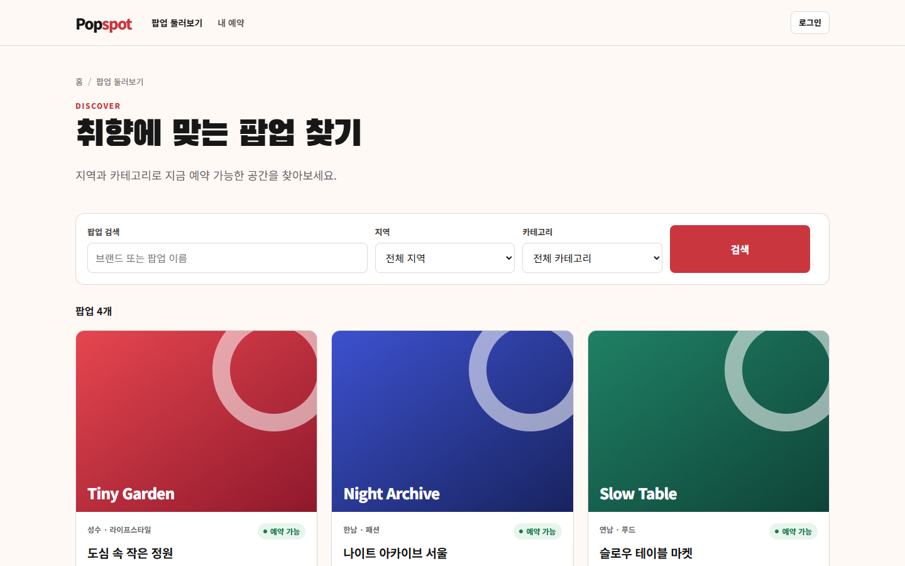
팝업 탐색 · 검색
- 이름 검색 · 지역 · 카테고리 필터로 팝업 찾기
- 카드마다 예약 상태 배지(예약 가능 · 오픈 대기 · 매진 · 마감)
- 로그인하지 않아도 탐색 가능, 예약할 때만 로그인 요청
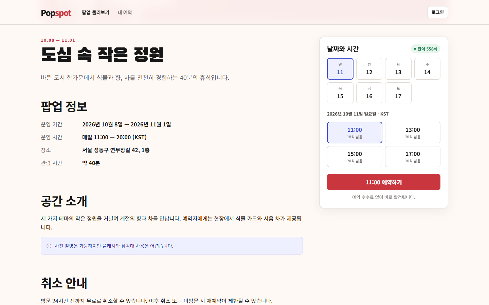
날짜 · 회차 선택
- 운영 기간의 날짜 → 회차(시간) 순서로 선택
- 회차별 실시간 잔여석 표시, 매진 회차는 선택 불가
- 모든 시간은 한국 시간(KST)으로 명시하고 서버에는 UTC로 저장
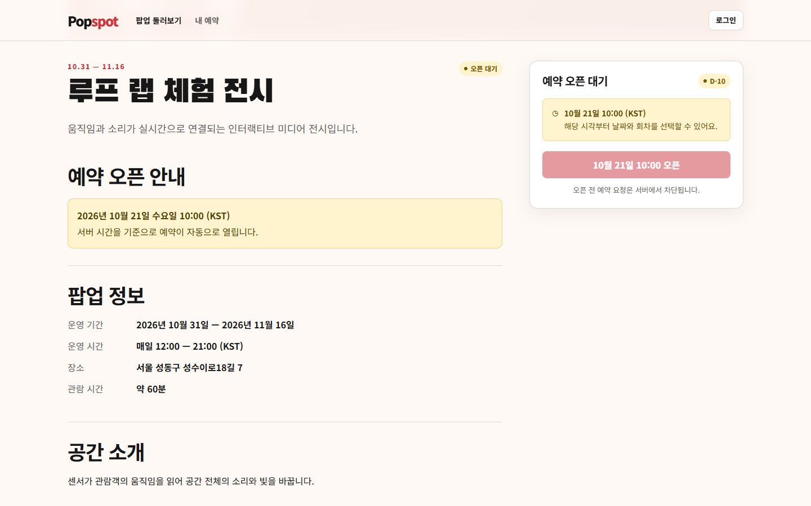
예약 오픈 대기 · 자동 오픈
- 오픈 전에는 오픈 일시와 D-day를 안내하고 예약 버튼을 잠금
- 서버 시각 기준으로 정각에 자동으로 예약 가능 상태로 전환
- 사용자가 PC 시계를 바꿔도 오픈 전 예약 요청은 서버가 차단
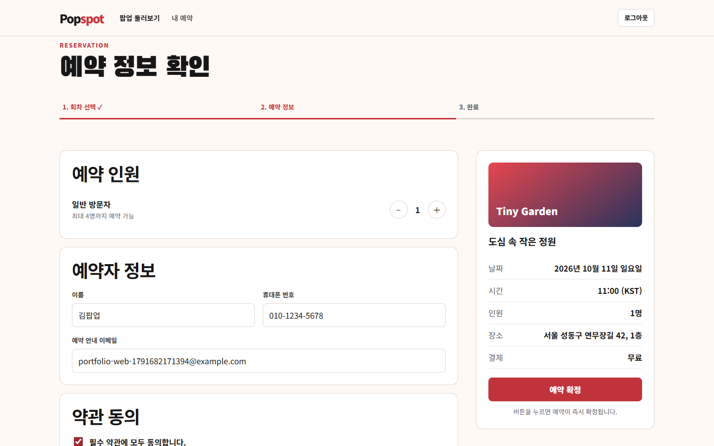
예약 정보 입력 · 확정
- 인원(최대 인원 제한), 예약자 정보, 약관 동의 입력
- 버튼을 여러 번 눌러도 예약은 한 번만 생성 (중복 요청 방지)
- 매진 · 중복 예약 등 실패 시 원인을 한국어로 안내하고 입력값 유지
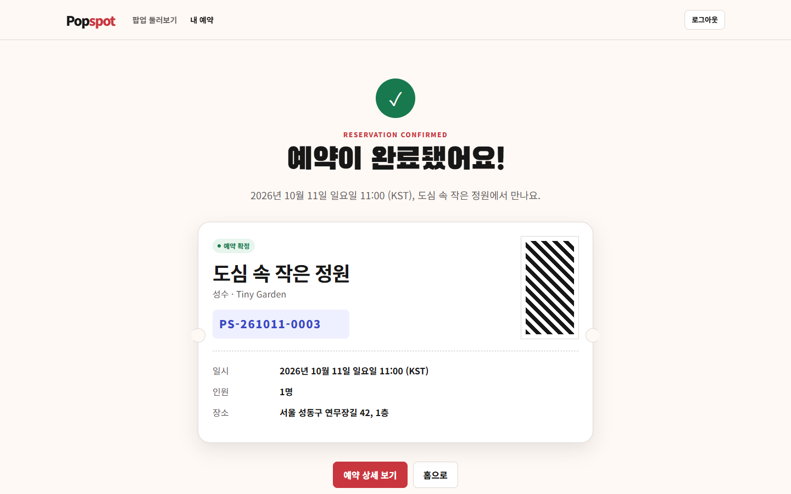
예약 완료 · 예약번호 발급
- 회차 날짜 기반 예약번호
PS-YYMMDD-NNNN발급 - 방문 일시 · 인원 · 장소를 티켓 형태로 요약
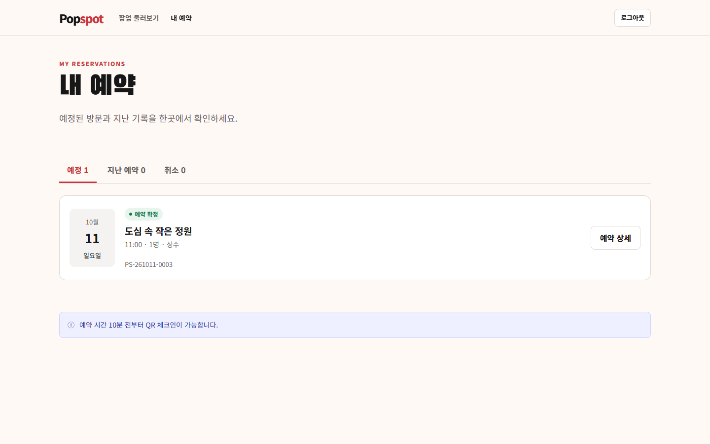
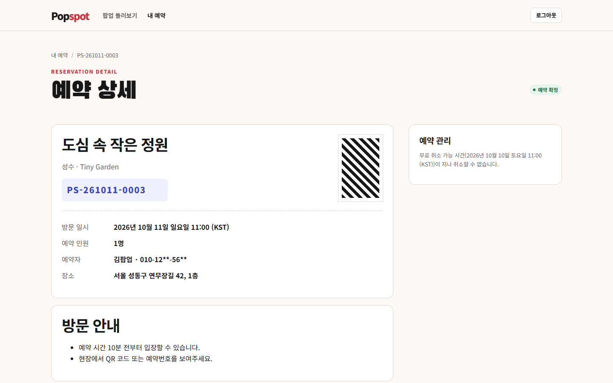
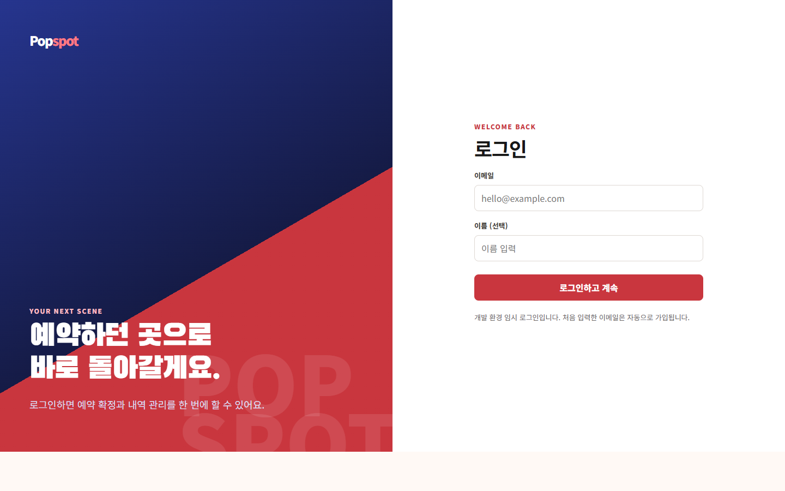
SCREENSHOTS · ADMIN CONSOLE
관리자 기능 실행 화면
운영자가 팝업과 회차를 등록하고, 방문 당일 예약을 확인·체크인하는 콘솔입니다. 관리자 권한은 화면이 아니라 서버가 매 요청마다 확인합니다.
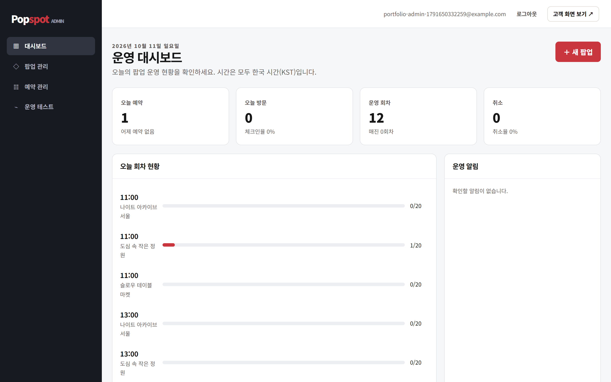
운영 대시보드
- 한국 시간 기준 오늘 예약 · 방문(체크인율) · 운영 회차(매진) · 취소율 KPI
- 오늘 회차별 좌석 점유 현황과 운영 알림
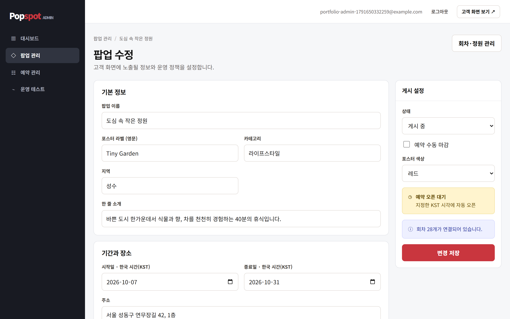
팝업 등록 · 수정 · 게시
- 초안 → 게시 → 종료의 게시 상태와 예약 상태를 분리 관리
- 즉시 오픈 / 예약 오픈(일시 지정), 수동 마감
- 두 관리자가 동시에 수정하면 나중 저장을 막고 새로고침 안내
- 예약이 있는 팝업은 초안 전환 · 삭제 불가
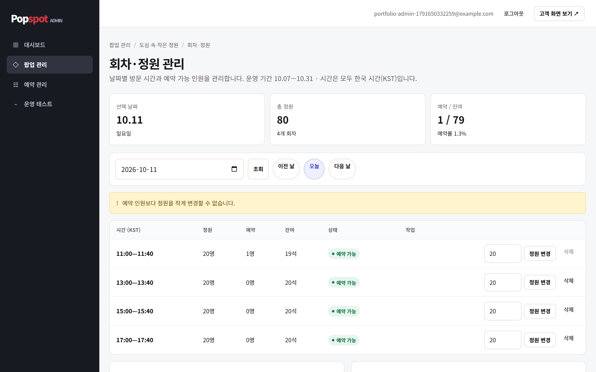
회차 · 정원 관리
- 기간 · 시간 간격으로 회차 일괄 생성
- 정원 변경 시 이미 예약된 인원보다 작게 줄일 수 없음
- 예약 이력이 있는 회차는 삭제 불가
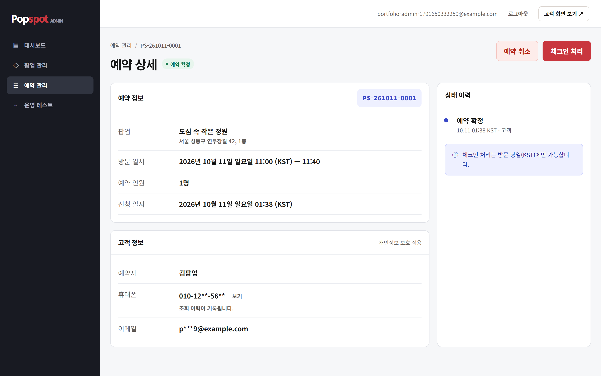
예약 관리 · 체크인
- 예약번호 · 이름 · 휴대폰 끝자리 검색, 팝업 · 날짜 · 상태 필터
- 고객 연락처는 기본 마스킹, 체크인은 방문 당일에만 가능
- 연락처 원문 조회 · 체크인 · 관리자 취소는 감사 로그로 기록
- 예약 확정 · 취소 · 체크인의 상태 이력 표시
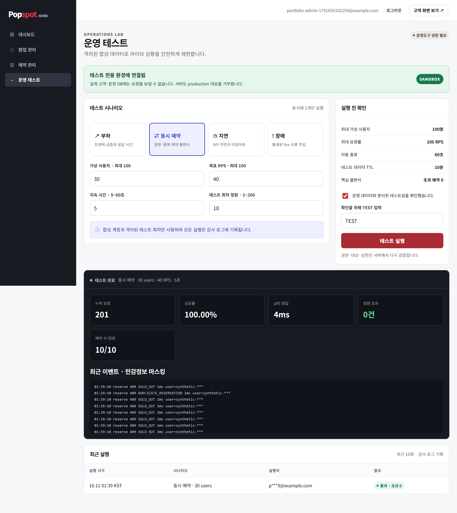
운영 테스트 도구 (SANDBOX)
- 관리자 화면에서 부하 · 동시 예약 · 지연 주입 · 장애 주입 시나리오 실행
- 실제 데이터와 분리된 가상 팝업 · 가상 사용자로 실행 후 자동 정리
- 결과로 정원 초과 0건, 응답 시간, 오류율을 실시간 표시
- 운영 환경에서는 서버가 기능 자체를 차단
RESPONSIVE
모바일 대응
같은 화면이 모바일 폭(390px)에서도 가로 스크롤 없이 동작하도록 만들고, 17개 화면 전체를 자동 테스트로 검사합니다.
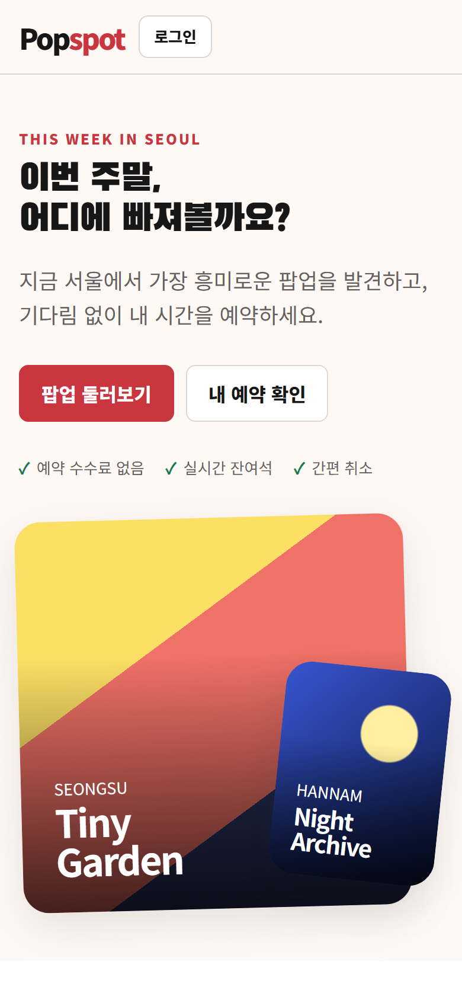
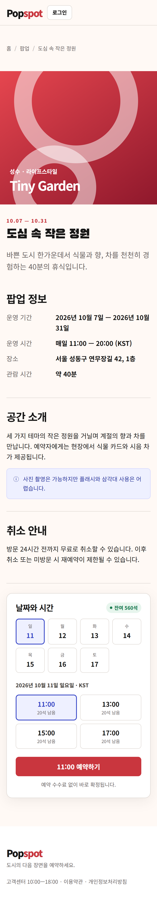
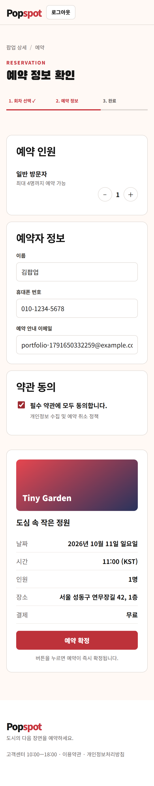
KEY CHALLENGES
해결한 핵심 과제
마지막 한 자리에 80명이 몰려도 초과 예약 0건
애플리케이션 메모리 락 대신 데이터베이스의 조건부 UPDATE · 행 잠금 · 유니크 제약으로 좌석을 차감해, 서버가 몇 대로 늘어나도 정원을 넘지 않습니다.
✓ 정원 10석 · 동시 80명 → 성공 정확히 10건, 나머지 매진 안내
중복 클릭 · 네트워크 재시도에도 예약은 한 번
예약 요청마다 멱등성 키를 붙여, 같은 요청이 여러 번 와도 첫 결과를 그대로 돌려줍니다. 같은 회차 중복 예약은 DB 제약으로 막습니다.
✓ 같은 요청 20회 재전송 → 예약 1건, 좌석 1회 차감
서버 시각 기준 정각 오픈
예약 상태(오픈 대기 · 예약 가능 · 매진 · 마감)를 배치 작업 없이 요청마다 서버 시계로 계산합니다. 저장은 UTC, 화면은 KST로 명시해 시간대 오류를 없앴습니다.
✓ 오픈 1초 전 · 정각 · 1초 후 경계 테스트 통과
토큰이 브라우저에 노출되지 않는 인증
로그인은 Supabase Auth, 토큰은 httpOnly 쿠키에 보관하고 Next.js 서버만 API를 호출합니다. Spring이 공개키로 서명을 검증하고, 관리자 권한은 서버 DB로 판정합니다.
✓ 위조 · 만료 · 권한 없는 토큰 거부 테스트 통과
테스트 통과한 코드만 자동 배포
GitHub Actions가 테스트 4단계(정책 · 웹 · API · E2E)를 통과한 main 커밋만 Google Cloud Run(API)과 Vercel(웹)에 배포합니다. 클라우드 키 파일 없이 인증하고, 롤백 · 암호화 백업도 자동화했습니다.
✓ push → 테스트 → 배포 → 상태 확인까지 자동
개인정보를 남기지 않는 운영
관리자 화면 연락처 마스킹, 로그에는 개인정보 대신 요청 ID만, 관리자 행동은 감사 로그로 기록합니다.
✓ 로그 개인정보 미기록 자동 검사
WORKFLOW
동작 흐름
예약 한 건이 처리되는 과정과, 코드를 push한 뒤 배포까지 이어지는 과정입니다.
좌석 차감 UPDATE는 같은 회차 행을 한 번에 하나씩만 갱신하므로, 동시에 몰려도 남은 좌석보다 많이 예약되지 않습니다.
ARCHITECTURE & STACK
구성과 기술 스택
사용 기술과 선택 이유
| 기술 | 왜 사용했는지 |
|---|---|
| FRONTEND | |
| Next.js 16 (App Router) | 서버 컴포넌트가 매 요청 최신 잔여석을 서버에서 그려, 브라우저가 API 주소와 토큰을 몰라도 됩니다. 고객 웹과 관리자 콘솔을 한 앱에서 경로 · 권한으로 나눕니다. |
| React 19 | useActionState로 서버 액션의 결과(오류 · 입력값)를 받아, 예약이 실패해도 입력값을 그대로 유지합니다. |
| TypeScript | API 응답 · 오류 코드를 타입으로 고정하고, CI의 typecheck 단계에서 타입 오류를 배포 전에 막습니다. |
| Server Actions | 별도 API Route 없이 폼 제출을 서버에서 처리해, 쿠키의 토큰과 멱등성 키를 서버에서만 다룹니다. |
| BACKEND | |
| Spring Boot 4.1 · Java 21 | 트랜잭션 · 보안 · 검증 · 헬스체크가 표준으로 갖춰져, "예약해도 되는가"를 최종 판정하는 신뢰 경계로 둡니다. Java는 LTS 버전인 21을 사용합니다. |
| Spring Security (JWT) | OAuth2 Resource Server로 토큰을 발급하지 않고 검증만 합니다. Supabase 공개키(JWKS)로 서명을 확인해 서명용 비밀을 공유하지 않습니다. |
| JdbcClient | 조건부 UPDATE, FOR SHARE/UPDATE, ON CONFLICT를 SQL 그대로 표현합니다. 동시성 제어에서 JPA의 간접 단계를 피하고 실행 쿼리를 숨기지 않습니다. |
| Flyway | 스키마를 버전별 SQL 파일로 관리하고 기동 시 자동 적용해, 로컬 · CI · 운영 DB가 항상 같은 스키마를 갖습니다. |
| DATABASE · AUTH | |
| Supabase PostgreSQL 17 | 관리형 표준 PostgreSQL이라 행 잠금 · CHECK · 부분 유니크 인덱스로 정원을 지키고, Spring이 JDBC로 직접 연결합니다. |
| Supabase Auth | 회원가입 · 비밀번호 저장 · 소셜 로그인을 직접 만들지 않고, 비대칭키(ES256)로 서명된 JWT를 Spring이 공개키로 검증합니다. |
| INFRA · CI/CD | |
| Docker · Compose | CI에서 테스트한 이미지를 그대로 운영에 배포하고, 로컬에서는 Compose로 DB + API를 한 번에 띄워 환경 차이를 없앱니다. |
| GitHub Actions | 테스트 게이트와 배포를 한 곳에 모아 테스트를 통과한 main 커밋만 배포합니다. OIDC로 클라우드 키 파일 없이 인증합니다. |
| Google Cloud Run | Spring 컨테이너를 그대로 실행하고, 요청이 없으면 0대로 줄어 비용이 들지 않으며, 리비전 단위로 바로 롤백할 수 있습니다. |
| Vercel | Next.js 제작사의 호스팅으로 CDN · HTTPS가 기본입니다. Git 자동 배포를 끄고 Actions가 빌드한 결과물만 올립니다. |
| TEST | |
| JUnit 5 · Testcontainers | 실제 PostgreSQL 컨테이너로 테스트해, 가짜 DB로는 확인할 수 없는 잠금 · 부분 인덱스 · ON CONFLICT 동작을 검증합니다. |
| Vitest | 시간대(KST) 변환 경계, 오류 코드 → 메시지 같은 웹 로직을 빠른 단위 테스트로 검사합니다. |
| Playwright | 실제 브라우저로 로그인 → 예약 → 매진 경쟁 → 취소, 관리자 흐름까지 끝에서 끝으로 확인합니다. |
| axe-core | 17개 화면의 WCAG 접근성 위반을 자동으로 검사합니다. |
기술 상세 문서에서 기술별 핵심 개념, 인증 · 배포 시퀀스, 트러블슈팅을 볼 수 있습니다.